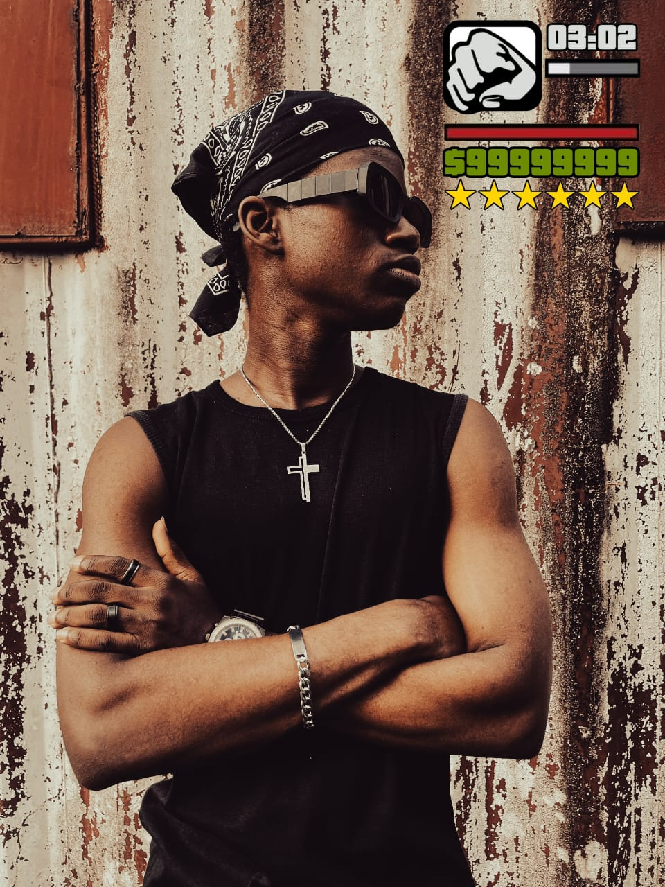

03 — Meet me
Hi, I'm Alex.
Hi, I'm Alex.
Nice to meet you.
I'm a photographer and visual storyteller based in Los Angeles. I fell in love with the camera at fifteen and never really put it down since.
Over the last decade I've shot everything from intimate backyard weddings to global brand campaigns. My work sits somewhere between documentary and editorial — honest moments, treated with a designer's eye for light and composition.
When I'm not shooting, you'll find me in the darkroom, on a trail somewhere with a 35mm, or obsessively rearranging my bookshelf. I shoot videos too.
- Weddings & elopementsFull day
- Portraits & lifestyle2–4 hrs
- Brand & editorialProject based
- Commercial & architectureProject based
- Highlight filmsAdd-on